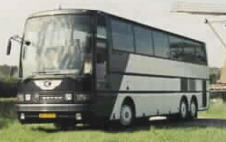
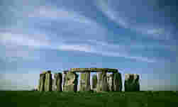

Literary
Tour 2000


Welcome to the
Ricks College
British Literature Tour
2000
Basic Tour Overview
The Packet
(Complete Tour Information)
Literature Resources
Online
Tests
Poems not in
Text
- General Information - Ireland
- Irish Declaration of Independence
- Grace (a song)
- Old Kilmainham Jail
- Political and Relief Map of Ireland
- General Information - United Kingdom
- Political Map of the United Kingdom
- General Information - Belgium
- General Information - France
- Political Map of Belgium and France
The Virtual Tour
The Virtual Tour
Norman Gage
Rita Vernon
Allen Hackworth.
Sponsored by: